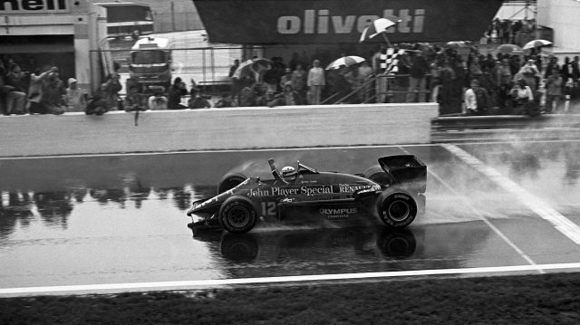
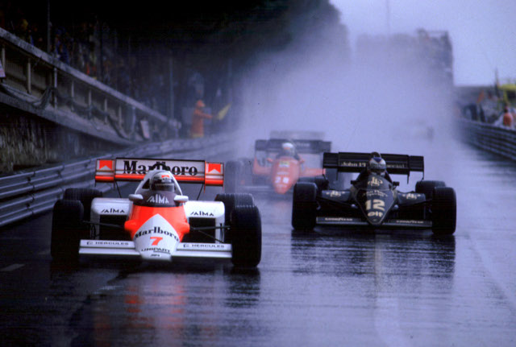
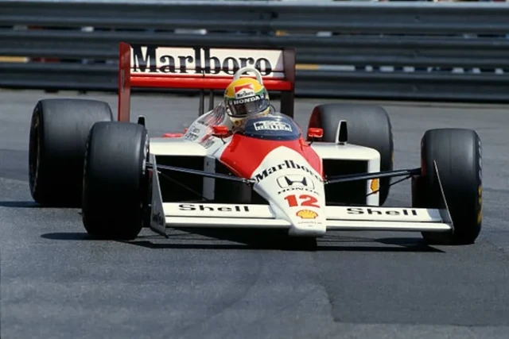
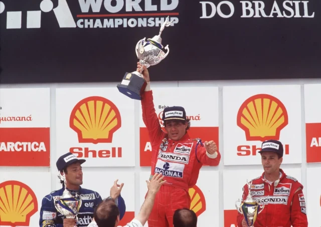
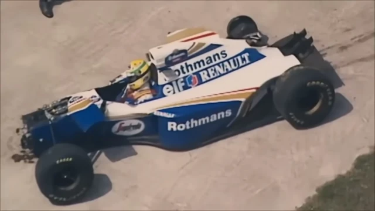

Primeira Vitória na Fórmula 1 (1985–GP de Portugal)
Foi a primeira vitória de Senna na F1, correndo pela equipe Lotus-Renault.
Chuva intensa em Estoril e um desempenho impecável marcaram o início de sua fama como "o rei da chuva".

Duelo com Alain Prost em Mônaco (1984)
Ainda como piloto da Toleman, Senna quase venceu seu primeiro GP em Mônaco, sob chuva forte.
A corrida foi interrompida quando ele se aproximava rapidamente do líder Alain Prost.
O mundo percebeu que um novo fenômeno estava surgindo.
Conquista do Primeiro Título Mundial (1988–McLaren)
Senna venceu seu primeiro campeonato mundial com a McLaren-Honda, vencendo 8 das 16 corridas da temporada.
Mostrou domínio e habilidade excepcionais, especialmente na famosa recuperação em Suzuka, onde saiu mal na largada e ainda venceu.

A Volta Perfeita em Mônaco (1988 – Classificação)
No treino classificatório, Senna fez uma volta considerada "sobrenatural", 1,4 segundo mais rápida que Prost.
Ele próprio disse ter se sentido como se estivesse "em outra dimensão".

Vitória Histórica no Brasil (1991 – Interlagos)
Depois de muitos azares, Senna finalmente venceu pela primeira vez em casa.
Ele terminou a corrida com apenas a sexta marcha funcionando, sofrendo dores musculares intensas, mas resistindo até o fim.
Emoção pura no pódio com o povo brasileiro.

Tragédia em Ímola (1994–GP de San Marino)
No dia 1º de maio de 1994, Senna sofreu um acidente fatal no circuito de Ímola, pilotando pela Williams.
A perda abalou o mundo inteiro. Seu legado se tornou ainda maior após sua morte, destacando sua personalidade, carisma, espiritualidade e preocupação com os outros.